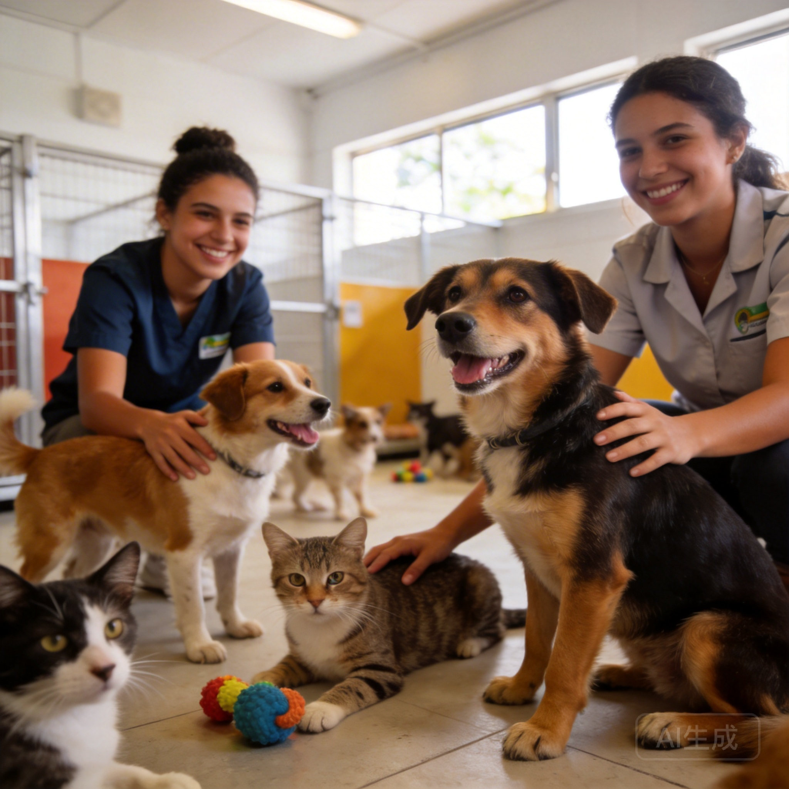

Bandeiras de Atuação
Princípios do Mandato

Causa Animal
Autor da Lei nº 11.644/2025 de proteção animal e do PL de recompensa por denúncias de maus-tratos.

Saúde
Autor do PL nº 957/18, aprovado em 2023, com novas diretrizes na legislação municipal de saúde.

Infraestrutura Rural
Projetos de melhoria nas estradas rurais, como a do km 18, beneficiando produtores e moradores.
Inclusão Social
Projetos de proteção para pessoas com TEA e promoção do respeito e dignidade aos idosos.

Juventude
Presidente da Comissão de Políticas Públicas da Juventude e co-fundador do Movimento MJC.